Alarm Management¶
PoracleWeb.NET provides a browser-based UI for managing Poracle notification filters. Users create alarms that tell Poracle which Pokemon, Raids, Quests, and other events to send as DM notifications.
All alarm CRUD operations are proxied through PoracleNG's REST API, which handles duplicate detection and reloads its state after every change. See PoracleNG API Proxy for technical details.
If PoracleNG doesn't answer, every alarm endpoint answers 503 ("PoracleNG could not be reached. Try again shortly.") and the page shows a "temporarily unavailable" message rather than an empty list. Nothing is cached locally, so nothing can be edited until it's back.
Alarm types¶
| Type | Description |
|---|---|
| Pokemon | Filter by species, IV, CP, level, PVP rank, gender, size, costume. See Costume filter. |
| Raids | Filter by raid boss, level, move, evolution, costume, EX eligibility, specific gym, RSVP notification mode. See Raid level selector and Costume filter. |
| Eggs | Filter by egg level, EX eligibility, specific gym, RSVP notification mode. See Raid level selector. |
| Quests | Filter by reward — Pokemon encounter, item, mega energy, candy, stardust or PokéCoins — with an optional minimum amount. See Quest alarm filters. |
| Invasions | Filter by grunt type and gender. See Invasion alarm filters. |
| Pokéstop Events | Showcase, Kecleon and Gold Stop events at a pokestop. See Pokéstop Event alarms. |
| Lures | Filter by lure type. See Lure alarm filters. |
| Nests | Filter by nesting Pokemon species and spawn rate. See Nest alarm filters. |
| Gyms | Filter by team changes, open slots, battle activity, specific gym. See Gym alarm filters. |
| Fort Changes | Filter by fort type (pokestop/gym), change types (name, location, image, description, removal, new) |
| Max Battles | Filter by battle level (1-5 Dynamax, 7/8 Gigantamax), specific Pokemon, Gigantamax-only toggle. See Max Battle alarm filters. |
Creating alarms¶
Each alarm type has a dedicated page accessible from the sidebar navigation. The creation flow:
- Press New alarm at the top right of the list (the Dashboard's New alarm menu opens the same dialog for any type)
- Pick the target on the first tab, which is named after the type. The Pokemon picker leads with a search box; Add by type or generation opens the generation and type buttons, and Add multiple takes a pasted list of names or Pokédex numbers, ranges such as
1-151included. With a generation or type picked, Select all adds every species the filter matches, including the tiles folded behind Show all - Configure filter options (IV range, CP range, level, etc.)
- On the Delivery tab, answer "Where should this alert reach you?" — see Where an alert reaches you. A small map under the answer draws the radius or the areas you picked
- Under Message on the same tab, optionally pick a template, and set clean mode and the other message switches. Below the picker, a preview shows what the template looks like: a Discord embed for Discord accounts, a chat bubble for Telegram accounts (bold, italic, underline, strikethrough, code, links and spoilers in the template's
parse_mode, with a line noting a sticker or location pin the template also sends). The preview fills in sample values, so the numbers aren't yours - Save the alarm
Editing alarms¶
Open an alarm's edit dialog from its card. Changing anything and saving replaces the rule upstream.
All eleven types take a uid-addressed replace: the rule is swapped in one call rather than deleted and re-created, so there is no window in which the alarm does not exist. Lure and max battle edits used to have exactly that window and no longer do.
An edit keeps the alarm's internal id
PoracleNG 5.4.0 puts the replaced rule back under its old uid, so the card, its filters and its
scope are all unchanged after a save. If PoracleNG can't reassign the id it logs that and the rule
comes back under a new one, which is rare; Quick Pick applied state follows the new
id, so a pick's remove button keeps working on a rule you have since edited. The card also stays
where it was in the grid; see Card order.
Where an alert reaches you¶
Every alarm answers the same question, and the Delivery tab of every add and edit dialog asks it outright: Where should this alert reach you? Three options, one radio group.
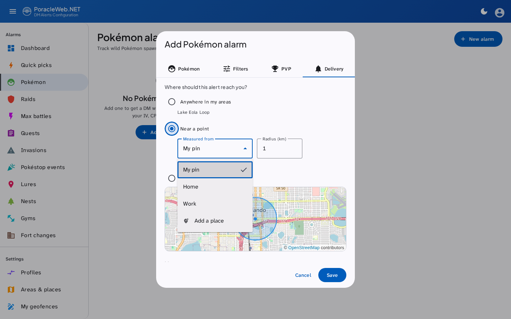
| Option | What it means |
|---|---|
| Anywhere in my areas | The alarm inherits whatever areas the active profile subscribes to. This is the default and the behaviour every alarm had before per-alarm scope existed. |
| Near a point | A radius around one fixed point. Measured from picks the point: your pin, or any saved place. Add a place in the same select opens the map picker without losing the alarm you are editing. |
| Only in specific areas | A list of areas for this alarm alone. It replaces the profile's area list rather than narrowing it, and geofences you drew yourself are offered alongside the admin areas. |
The list under Only in specific areas holds the areas the active profile subscribes to, not every area on the instance, plus your own drawn geofences. On a server shared between communities the whole list is hundreds of areas from places you have nothing to do with, and this option narrows an alarm within what you already get rather than subscribing you to something new. An area the alarm already carries stays on the list even if you have since unsubscribed from it, so editing that alarm does not quietly drop it. Matching is case-insensitive, because subscriptions are stored lowercased while the area list carries the published name.
The three are exclusive rather than combinable, because PoracleNG refuses every mixture of them: a place with areas, areas with a radius, and a place without a radius are all rejected upstream. Modelling the choice as a radio group means those states can't be typed in the first place.
Under the hood the picker writes three fields. "Anywhere in my areas" clears both overrides and sends distance = 0. "Near a point" sends the radius in metres, plus override_location_label when a saved place is chosen and nothing when the pin is. "Only in specific areas" sends override_areas and forces distance to 0. Both overrides are always sent explicitly, including empty, because a null means "leave what's stored" on the write path. Without that you could set an override and never take it off.
A radius you type runs from 0.1 to 100 km. Outside that the field says so and Save stays off. An alarm already stored with a radius outside that range (the API itself allows up to half the Earth's circumference) keeps it, to the metre, through an edit that leaves the radius alone; only a changed radius is held to the range. To set a radius past 100 km on existing alarms, use the bulk Change radius. When PoracleNG sets [tracking] max_distance, Change radius stores at most that distance, the way PoracleNG caps one in the bot; PoracleNG's admins and destinations that aren't people (channels, threads, webhooks, groups) are not capped. Likewise [tracking] max_areas caps how many areas Only in specific areas can name, and Save answers with the limit when there are too many.
If you choose "Near a point" without ever having set a pin, the picker says so and offers a Set your pin button in place, rather than saving an alarm that measures from 0,0.
Under the three answers the dialog draws what you picked on a small map: the circle at the typed radius around the pin or place (drawn even when the radius is out of range, so a typo of 500 km is obvious), the chosen areas shaded, or the profile's areas for "Anywhere in my areas". Nothing is drawn when there is nothing to show yet, and under disable_location the near-a-point map is not drawn at all, since the pin and places are never read.
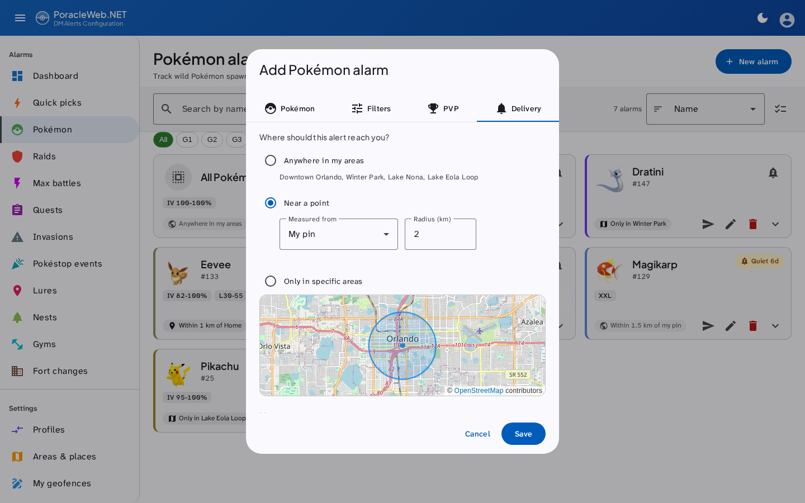
Your own geofences work here
PoracleWeb.NET serves user-drawn geofences with userSelectable: false to keep them out of the bot's !area picker, so PoracleNG would normally refuse them in override_areas. PoracleWeb.NET checks each name itself (selectable for you, one of your own drawn geofences, on your active profile, or already on the alarm you're editing) and then asks PoracleNG to save the alarm with those names trusted. A geofence you drew can scope one alarm whether or not your profile subscribes to it, and nothing is written to PoracleNG's database directly. See Custom geofences.
An Add that would replace another alarm is refused
PoracleNG treats an alarm that differs from one you already have in a single setting (the distance, the template or the clean flag) as an update of that alarm, not a new one. Before saving, PoracleWeb.NET asks PoracleNG what an Add would do. If it would take another alarm over, nothing changes and a single Add keeps its dialog open with your settings: a line above the buttons reads "Already covered by:" and the alarm it collided with, and Edit that one opens that alarm's edit dialog instead. When the server names no rule, the line gives its reason alone. Adding several at once closes as before, skips the clashes and reports the first reason. If the alarm already exists exactly, nothing is written. Editing an alarm into a copy of another one is refused the same way. Max battles follow the same rule, so a second alarm for the same boss that differs only by radius is refused where it used to stack.
Pokemon is the exception for the clean setting. An Add that matches an existing Pokemon rule in everything but Clean mode comes back as "already tracked" and the stored rule keeps its old setting. To change Clean mode on a Pokemon rule, edit it.
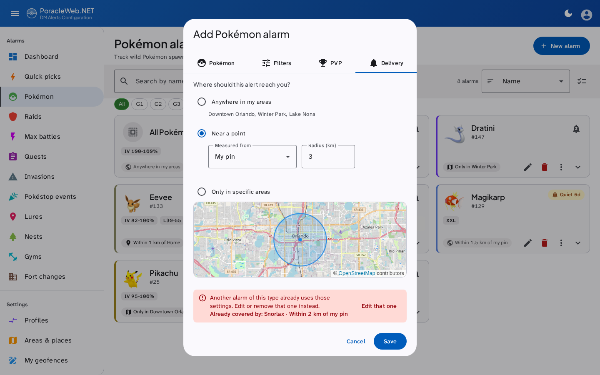
An alarm PoracleNG can't store is refused whole
A few shapes have no v2 representation: an egg without a level (old quick picks and import files can carry one), an invasion limited to gender 3, a PVP league other than 500, 1500 or 2500. Saving one fails with "PoracleNG can't store this alarm as it is: ... Nothing was changed." naming the field, rather than dropping the part PoracleNG can't hold.
Saved places¶
A place is a named point ("home", "work", "the gym") that an alarm can measure from instead of your profile pin. They live on the Areas & places page: the area map draws each one as a labelled violet dot beside the blue pin, and the Pin and places panel under the map is where you add, move and delete them. (/places still resolves; it redirects to /areas.)
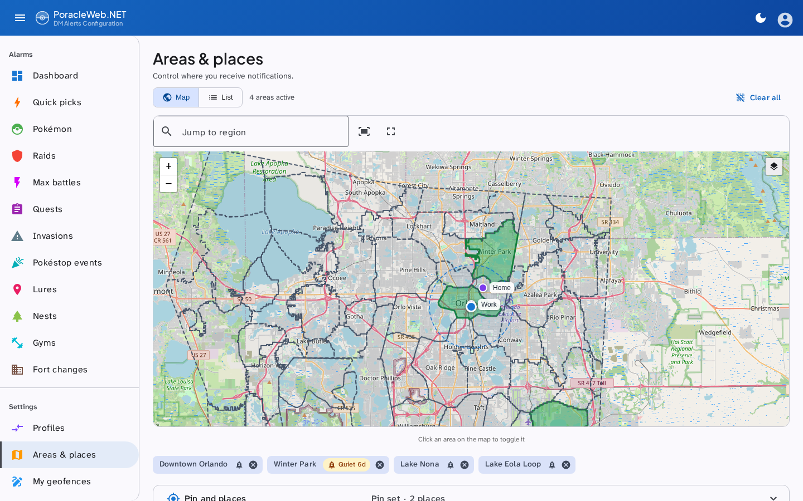
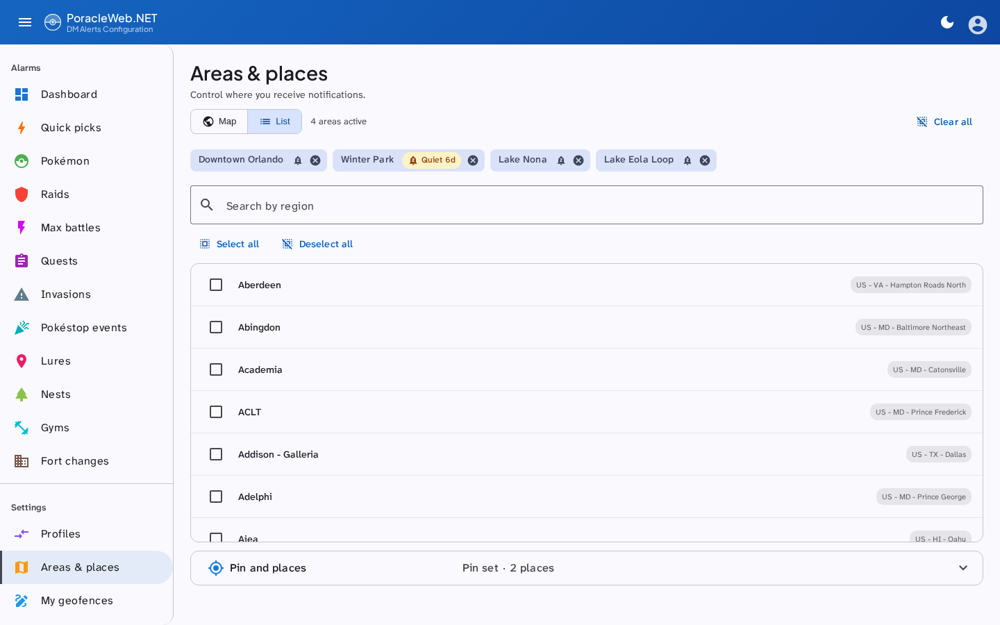
The pin is set from the My pin row of that panel, through a map picker with an address search; the search goes through PoracleNG's geocoder, and the disable_nominatim site setting hides it.
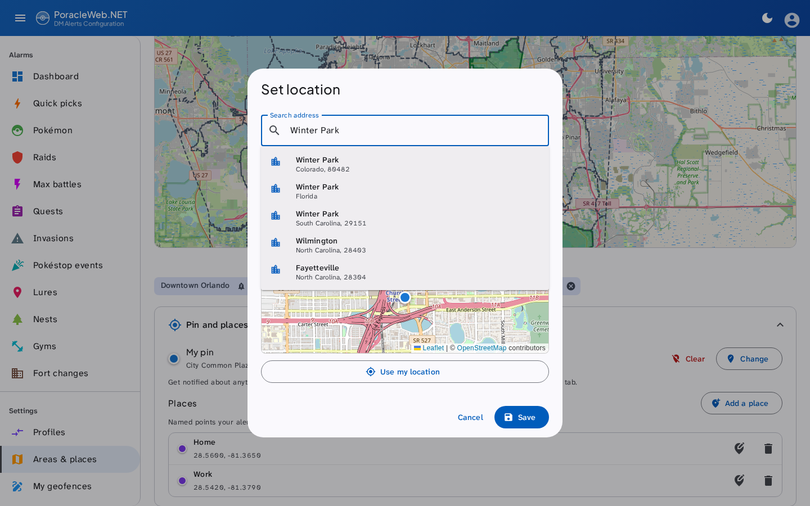
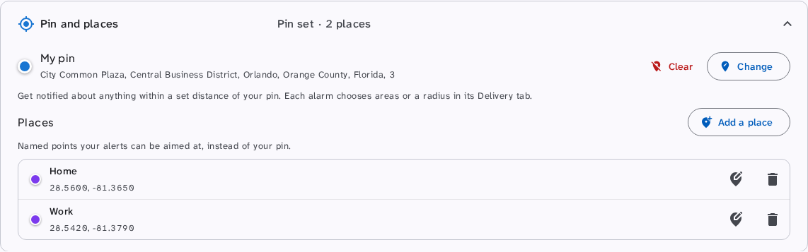
Add one with Add a place: drop the marker, then name it. Names are yours to choose and are what an alarm's override_location_label refers to. Places are user-scoped, not profile-scoped.
A name you already have is refused, and so is one longer than 64 characters — the column will not hold it. Both come back with the reason against the field rather than as a server error.
To move one, use the move button beside the bin on its row. It reopens the same map picker adding one does, and the label is untouched, so every alarm aimed at that place follows it. There is no naming step, because the label is what the alarms point at and changing it is a different act.
Moving needs a reachable PoracleNG
Every supported PoracleNG (5.4.0 and later) has the endpoint, so the move button is always there. If PoracleNG is unreachable the move fails with an error. Without the endpoint the only route would be delete-and-re-add, which is refused while any alarm still points at the place, so those alarms would have to be repointed first.
Deleting a place that alarms still point at is refused. Before any dialog opens, the bin reads GET /api/location/place-usage?label= (the active profile's rules aimed at that label, each with PoracleNG's own one-line description). If some are, an information dialog titled "place is in use" lists them (up to eight, then "and N more") with only a Close button; if none are, the ordinary delete confirm appears; if the read fails, a cautious confirm appears instead. DELETE /api/location/places/{label} still answers 409 with a referencingRules list for a rule added in between, and the snackbar names those alarms.
The API is four endpoints on LocationController, all gated by disable_location:
| Endpoint | Purpose |
|---|---|
GET /api/location/places |
Every place plus the profile pin, as { default, named }. default is null when the user has never set a pin. |
POST /api/location/places |
Saves a place. A label PoracleNG refuses comes back as a 400 the dialog shows against the field. |
PUT /api/location/places/{label} |
Moves a place, keeping its label. 409 with the version it needs on a server without the route. |
DELETE /api/location/places/{label} |
Deletes a place, or 409s with the alarms still using it. |
Changing scope from a card¶
Every alarm card carries a scope chip reading the alarm's answer back to you: "Anywhere I get alerts" when the profile has no areas selected, otherwise "Anywhere in my areas", "Within 2 km of Home", "Only in Terrigal, Erina". Clicking it opens the same picker in a small dialog (on a phone, a sheet from the bottom of the screen), so one alarm's scope can be changed without opening its edit dialog.
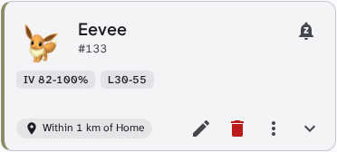
Default delivery scope (Alert Defaults)¶
By default, every new alarm opens pre-set to Areas (geofence-based — the alarm sends distance = 0). If you usually track by radius, you can change that default so new alarms open on Distance with a radius you choose, instead of switching the location mode and re-typing a distance on every add.
Open the user menu (your avatar, top-right) and select Alert defaults:
| Setting | What it does |
|---|---|
| Default mode | Areas or Distance for new alarms |
| Default distance | When Distance is the default, the radius (0.1–100 km) used to pre-fill new alarms. A live delivery preview shows what the choice covers |
| Measured from | Also Distance-only: the pin, or a saved place new alarms should measure from. Switching the default back to Areas clears it, since a place without a radius is a scope PoracleNG refuses |
The preference is per-browser (stored in localStorage under poracle-default-alert-mode / poracle-default-alert-distance-km / poracle-default-alert-place, the same pattern as the theme and language settings) and is read by the AlertDefaultsService. It seeds the scope picker in every add-alarm dialog and in the Quick Pick apply dialog.
Applies to new alarms only
Alert Defaults only changes what the add/apply dialogs open with. Existing alarms are untouched, and you can still set a different scope on any individual alarm before saving it. Because the preference lives in the browser, it does not sync across devices.
Pokemon Availability¶
When a Golbat scanner is configured, the Pokemon selector shows which species are currently spawning in the wild. This helps users create alarms for Pokemon that are actually available to encounter.
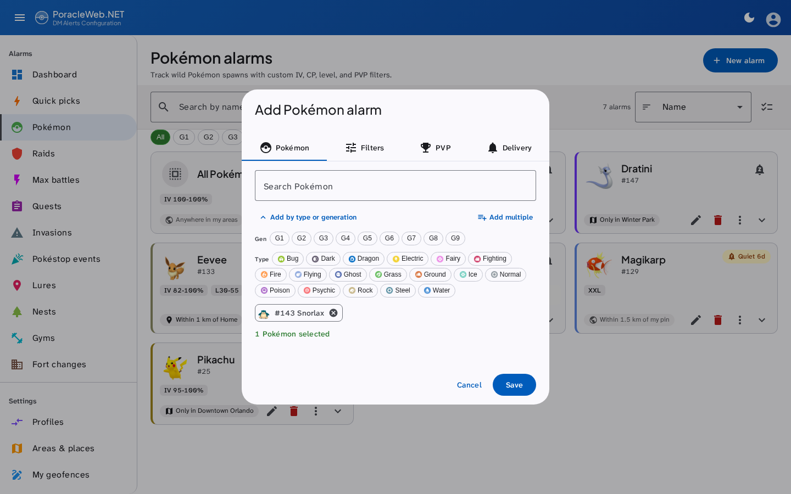
How it works¶
- The backend fetches spawn data from Golbat's
GET /api/pokemon/availableendpoint - Results are cached for 5 minutes with a stale-data fallback if Golbat goes down
- The frontend fetches availability via
GET /api/pokemon-availabilityand auto-refreshes every 5 minutes in the background - The Pokemon selector renders availability indicators when data is available
What the user sees¶
Add by type or generation under the picker's search box opens the Gen, Type and Live > Spawning rows; the Spawning chip narrows the list to species spawning now. Small green dots mark available Pokemon in both the autocomplete dropdown and the tile grid, and unavailable ones get a muted grey dot. While any filter (Gen, Type or Spawning) is active, spawning species sort to the top, and a "X species active" label counts them.
Feature gating¶
The availability UI is automatically hidden when Golbat is not configured. No admin toggle is needed — the feature is infrastructure-driven.
To turn it on, set GOLBAT_API_ADDRESS (the Golbat API's URL, for example http://localhost:9001) and GOLBAT_API_SECRET in your .env.
Alarm cards¶
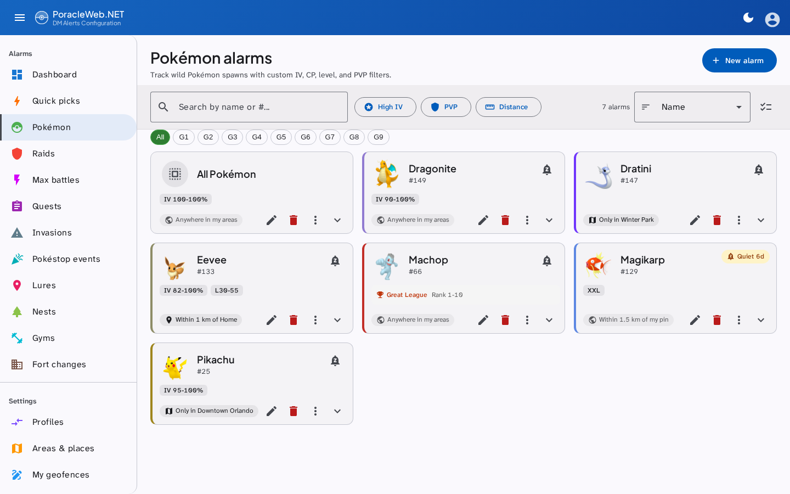
Alarms are displayed as a card grid, and every alarm type uses the same card:
- the subject large at the top: the Pokémon sprite, raid boss or egg, quest reward, grunt, lure, team or event, with its name
- on the right of the subject, the rule's status: clean, edit in place, daily summary, RSVP, and on the types that name a subject a quiet chip
- one line of filters, each just the value ("IV 90-100%", "L30-55", "XXL", "Valor")
- on gym, raid and egg cards, the name of the targeted gym when one was picked
- the scope chip, saying where the alert reaches you, beside the test, edit and delete actions; click the chip to change the scope from the card
- a Details control that opens the rule summary
Colour on a card means something or isn't there. Gym and raid cards take the team as their left edge (Mystic blue, Valor red, Instinct yellow, grey for any team), egg cards the colour of the tier's egg, and a single-species Pokémon card its primary type. Every other card has no coloured edge.
Every list has the same bar above the grid: a search box (by name, boss, tier, gym, reward, grunt, lure, move or change, depending on the type), the count, a sort menu and the select-mode toggle. When a search leaves nothing on screen the page says so and offers to clear it, and Select all selects only the cards the search left. The Pokémon list keeps its own quick filters and generation chips in the same bar.
What this rule does, in Poracle's words¶
Behind Details on each card is the sentence PoracleNG itself uses to describe that rule. It states things the filters leave out (attack and defence floors, weight, the PVP CP cap) at the cost of restating some of what they already show.
Nine surfaces carry it: Pokémon, raids (both raid and egg cards), quests, invasions, lures, nests, gyms and Max Battles. Fort Changes does not, because upstream renders a raw JSON array there rather than a sentence. Pokéstop Events has no sentence either.
The sentence follows your Alert language, not your display language, because Poracle writes it. When the two differ the Details control is hidden rather than putting one language's prose under another language's filters. It is also absent when Poracle sends no description. Nothing extra is fetched for it: the field was already on the response.
Card order¶
Raids, eggs, quests, invasions, lures, nests, gyms, max battles, fort changes and Pokéstop Events each sort their grid on what the card is titled by: Pokemon and level for raids and max battles, level for eggs, reward for quests, lure type, species for nests, team for gyms, change type for fort changes, event type for Pokéstop Events. An edited card therefore stays where it was instead of jumping to the end of the grid, even in the rare case where an edit gives the rule a new id.
The keys are the raw fields — dex number rather than species name, reward type rather than reward name — so the grid does not re-order itself once the master data arrives, and the order does not change with the display language. That order is Default in each list's sort menu; sorting by name, tier, reward type, Pokédex number or newest first is one click away, and ties keep the default order. The Pokémon list sorts by name by default, as it always has. Invasions sort on grunt type and gender the same way.
Bulk operations¶
Each alarm list page has a select mode toggle (checklist icon in the toolbar):
- Toggle select mode on
- Check individual alarms or use Select all
- Use the bulk toolbar: Change radius sets a new radius (anything above zero, up to the API's cap of half the Earth's circumference), or no radius, on the selected alarms, and Delete removes them. The radius dialog names how many alarms you selected, and the Delete button does too ("Delete 4").
Delete is the one red, filled button in the bar, and Change radius sits beside it in a quieter tone, so the two can't be mistaken for each other. On a phone the bar is pinned to the bottom of the screen, so it stays in reach while you scroll and tick cards.
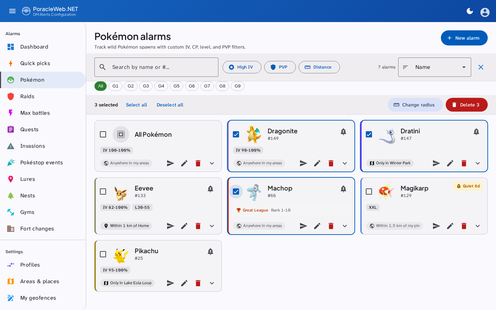
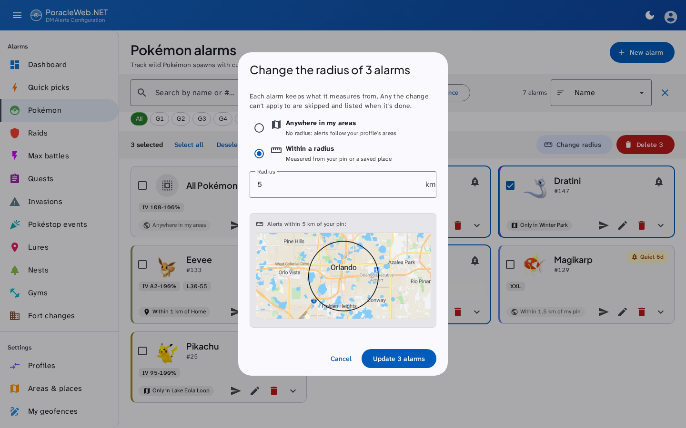
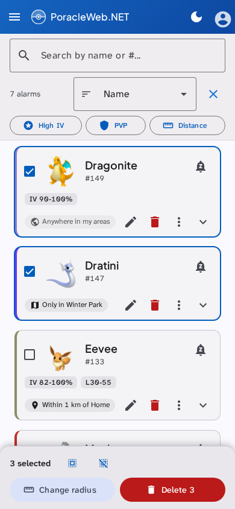
Bulk distance changes only the distance
A bulk distance update asks PoracleNG to change the distance on the selected alarms and nothing else, so every other setting on them stays as it is. PoracleNG checks each alarm separately: one it refuses doesn't stop the rest, and the confirmation says how many were skipped and why.
| Message | Why |
|---|---|
| "Skipped N limited to areas: a radius doesn't apply to them." | The alarm is limited to specific areas, which can't take a radius |
| "Skipped N measured from a saved place: they need a radius." | The alarm measures from a saved place, so a zero can't apply |
| "Skipped N that would clash with another rule." | At the new radius it would match another alarm you have exactly, or close enough that PoracleNG would merge the two. A refusal PoracleNG gives no clearer reason for is counted here too |
Every alarm that was changed keeps its id. The cleaning toggle works the same way, changing only the clean setting.
The flow, for developers, is in Backend → Bulk operations.
Profiles¶
Users can maintain multiple alarm profiles. Only one profile is active at a time.
The Profiles page shows every alarm on every profile in one overview, and switches, edits, duplicates, deletes, exports and imports profiles from the same page. Each alarm belongs to a profile_no, and PoracleNG tracks the active one in humans.current_profile_no. Profiles covers the page in full.
Cross-Profile Overview¶
The Profiles page uses PoracleNG's v2 tracking snapshot (GET /api/v2/humans/{id}/tracking?all_profiles=true&include_descriptions=true) to fetch all alarms across all profiles in a single call. Alarms are grouped by profile (expandable accordion panels) and by type within each profile.
Duplicating a profile¶
The Duplicate button on each profile panel creates a new profile with all alarms copied from the source profile:
- Click the Duplicate button on any profile panel
- Enter a name for the new profile (pre-filled as
"<source name> (Copy)") - Click Duplicate
The new profile inherits the source profile's areas, location, active hours and all alarm filters, including a role or user mention on a webhook's alarms. The copy is PoracleNG's own profile copy, and your active profile doesn't change while it runs. If the alarm copy step fails, the empty profile is rolled back (deleted) so you never end up with a shell profile.
Duplicate vs. Create
Use Duplicate when you want to start with an existing set of alarms and tweak them. Use Create when you want a blank profile.
Profile Backup & Restore¶
Export writes a per-profile JSON backup of every alarm filter, without the internal fields (uid, id, profile_no), in the form { version: 1, exportedAt, profileName, alarms: { pokemon: [...], raid: [...], ... } }.
Import reads a backup into a new profile. The alarms are written straight to the new profile, so your active profile stays as it was, and every alarm is checked before the first one is saved. An alarm that already exists on the new profile, or would replace another, is skipped. Invasion rows that are really Pokéstop events (Kecleon, Gold Stop, Showcase) are saved as event rules, and a grunt saved as metal is imported as steel. A name you already use gets a numeric suffix, "Home (2)".
Profile names¶
The server doesn't require profile names to be unique, and accepts up to 255 characters. The dialogs are stricter: the add, duplicate and import dialogs flag a name you already use as you type, the edit dialog checks when you save, and the add and edit dialogs stop at 32 characters. Only import changes a clashing name itself, by adding a numeric suffix.
Pokemon alarm filters¶
Size filter¶
The size filter uses special sentinel values:
| Value | Means |
|---|---|
size = -1 |
No filter, all sizes. The default |
size = 1 to 5 |
A specific size: 1 = XXS, 2 = XS, 3 = Normal, 4 = XL, 5 = XXL |
max_size = 5 |
The default upper bound |
When a user selects a specific size, both size and max_size are set to the same value, creating an exact match. For example, selecting XXL sets size = 5, max_size = 5.
Costume filter¶
A Costume select sits beside Form in both Pokemon dialogs, and on raid alarms that name a specific boss. Three kinds of answer, and the sentinels are not the ones used elsewhere on this page:
| Value | Means |
|---|---|
9000 |
Any costume, including none. The default. |
0 |
No costume — the plain form only. |
| N | That costume and no other. |
Note that 0 means "uncostumed" here, where on most other filters 0 means "any". The wildcard is
9000, matching the raid and move sentinels rather than the size filter's -1.
On raids the control appears on the By boss tab of the add dialog only, and in the edit dialog only for a rule that names a boss. A by-level raid rule is always "any costume": PoracleNG forces the boss to the wildcard on those, so there is no species for a costume to belong to. Eggs have no costume column at all.
Costume names come from the WatWowMap masterfile — the same file PoracleNG reads for its own costume lookups — and are English in every interface language. A costume too new for that file shows as its number rather than a name. See Game data names.
Always offered
The costume column exists in every supported PoracleNG (database migrations 6 for monsters.costume
and 7 for raid.costume are in 5.4.0), so the select is always there and nothing asks the server
first.
Minior¶
Minior's IVs, CP and level are rerolled for each player when it's caught, so a scanner may report it without stats, and a rule that filters on them never fires. Picking Minior in the Pokemon picker shows a note saying so, and the edit dialog of a Minior alarm shows it too. Track Minior with IV, CP and level left open.
Level range¶
The default maximum level is 55 (not 40 or 50), matching Poracle's support for shadow/purified/best-buddy boosted levels.
Minimum time left¶
Under More filters, Time left skips spawns that will despawn before you could reach them. The field is a select rather than a free number, offering Any, 1, 2, 5, 10, 15 and 20 minutes. PoracleNG stores seconds (min_time), and a free field invited two silent failures: typing 5 meaning minutes asks for five seconds, and a value longer than a spawn lives mutes the alarm with no error. A value set from the bot that isn't one of the presets is kept and offered in the list rather than being overwritten on the next save.
When set, the card shows a "5 min left" pill alongside the IV and CP pills.
PVP mega evolution¶
On the PVP tab, once a league is selected, Mega evolution chooses which form the rank applies to: Base, Mega, Mega X or Mega Y (pvp_ranking_evolution 0–3). Megas are ranked separately from their base forms, so a Mega rule will not match a base-form spawn. Pick Base unless you specifically want mega rankings.
The chosen form appears as a suffix on the card's PVP badge ("Great League · Mega X").
Raid level selector¶
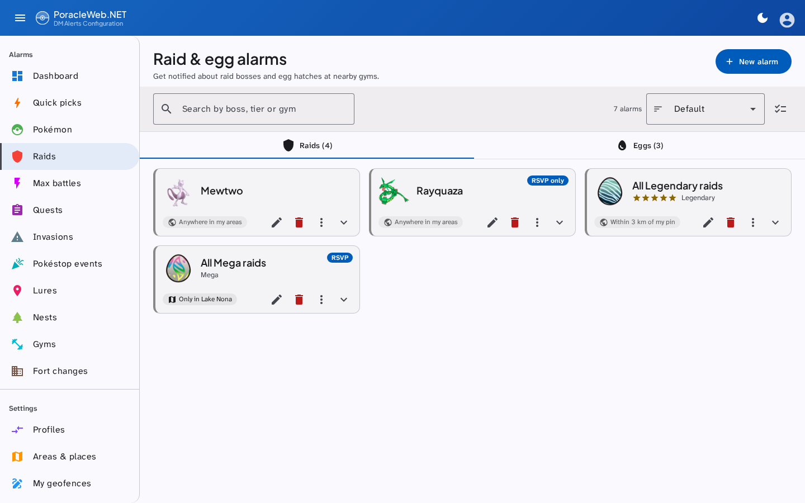
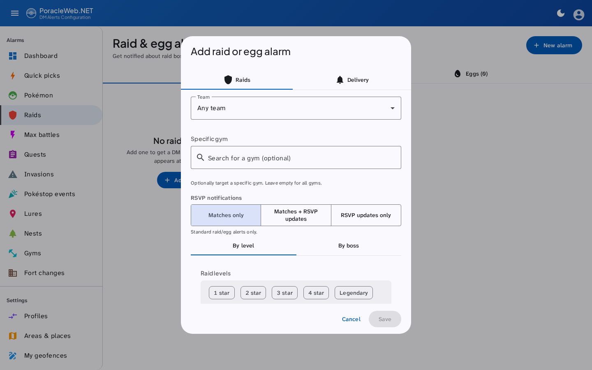
The raid and egg pickers share the <app-level-selector> chip component. The vocabulary follows the WatWowMap masterfile — the same source PoracleNG uses for in-DM notification text — so the names you see in the picker match what users receive in their alerts.
Raid picker. Multi-select. Primary chip row shows the seven most common types: 1 Star, 2 Star, 3 Star, 4 Star, Legendary (level 5), Mega (level 6), Mega Legendary (level 7). A Any chip selects the wildcard sentinel (level 9000) that matches every raid level. A More raid types… overflow menu surfaces the other 12 canonical types: Ultra Beast (8), Elite (9), Primal (10), 1–5 Shadow (11–15), 4–5 Super Mega (16–17), Coordinated 1–2 (18–19).
Egg picker. Multi-select. Only the five Star tiers (1–5) are surfaced — Pokémon GO has no Mega/Shadow/Primal eggs.
The "By boss" tab has no level picker. PoracleNG forces level to the wildcard 9000 for any raid
alarm carrying a specific pokemon_id (trackingRaid.go), so a level chosen alongside a boss could never
survive the request. The tab used to show a picker whose value was always discarded; it was removed in
v2.14.0. Track a boss to be alerted at whatever level it appears.
+ Add. Both pickers expose an inline numeric input for any positive integer not in the canonical list. Useful for forward compatibility — if Niantic introduces a new raid type (raid_20) before PoracleWeb.NET ships an update, you can already alarm on it. Typed values are ephemeral to the dialog session: close the dialog (or refresh the page) and the chip is gone. Saved alarms at custom levels re-seed the chip when you open the edit dialog.
The canonical list is served by the API at GET /api/masterdata/raid-levels (cached server-side; baked-in fallback if the masterfile fetch fails). Card titles like "All Mega Legendary Raids" compose by combining the modifier ("Mega Legendary") with the localized "Raids" suffix from RAIDS.ALL_LEVEL_RAIDS, so card text reads naturally without the doubled word that an unaltered masterfile string would produce.
Raid alarm filters¶
Raid alarms support these fields beyond the basic level/boss selection:
| Field | Default | Description |
|---|---|---|
team |
4 (any team) |
Gym team controlling the raid |
move |
9000 (any move) |
Filter by raid boss move |
evolution |
9000 (any) |
Filter by evolution type (e.g., Mega, Primal) |
exclusive |
false |
EX/exclusive raid flag |
gymId |
null (all gyms) |
Track a specific gym by ID (set via gym picker) |
rsvpChanges |
0 (matches only) |
RSVP notification mode: 0 matches only, 1 matches + RSVP updates, 2 RSVP updates only. Selectable as a three-option toggle group in the raid add/edit dialog; shown as an "RSVP" / "RSVP only" status badge on raid cards (beside the auto-delete tag) when non-default. Selecting mode 1 or 2 also sets PoracleNG's edit-in-place bit (clean bit 2) so RSVP count changes edit the existing alert rather than sending a new message. Mode 2 requires the upstream scanner to emit RSVP webhooks — selecting it in deployments without one will silence the alarm. |
Egg alarm filters¶
Egg alarms support:
| Field | Default | Description |
|---|---|---|
team |
4 (any team) |
Gym team controlling the egg |
exclusive |
false |
EX/exclusive egg flag |
gymId |
null (all gyms) |
Track a specific gym by ID (set via gym picker) |
rsvpChanges |
0 (matches only) |
RSVP notification mode: 0 matches only, 1 matches + RSVP updates, 2 RSVP updates only. Selectable as a three-option toggle group in the egg add/edit dialog; shown as an "RSVP" / "RSVP only" status badge on egg cards (beside the auto-delete tag) when non-default. Selecting mode 1 or 2 also sets PoracleNG's edit-in-place bit (clean bit 2) so RSVP count changes edit the existing alert rather than sending a new message. Mode 2 requires the upstream scanner to emit RSVP webhooks — selecting it in deployments without one will silence the alarm. |
Quest alarm filters¶
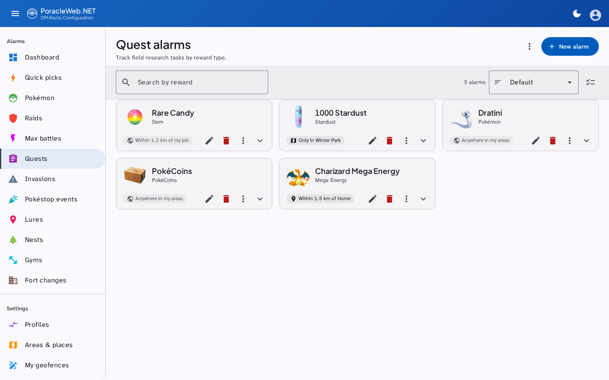
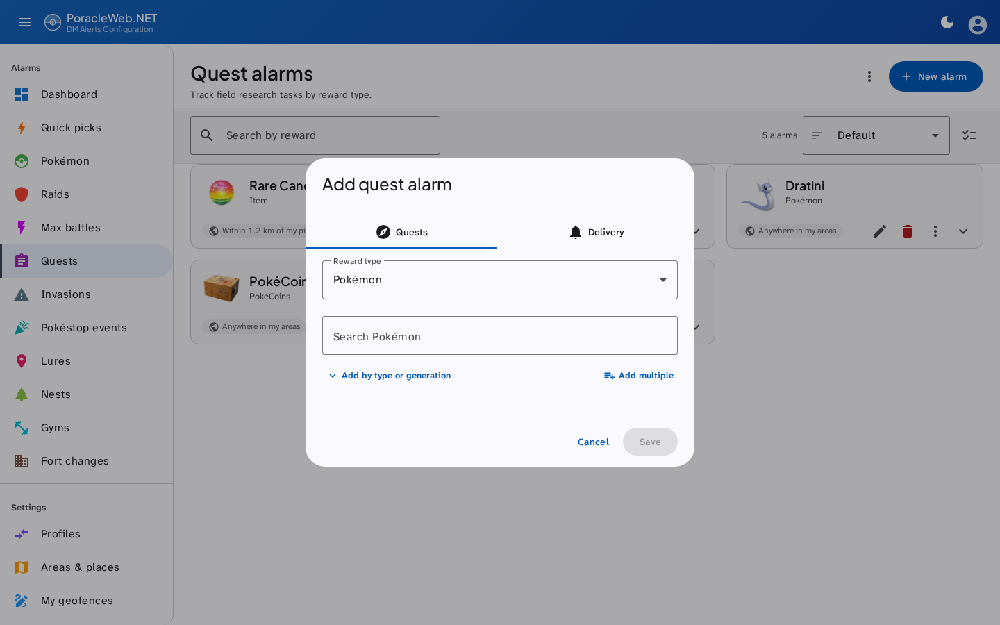
A quest alarm matches one reward. The Reward type dropdown on the Rewards tab decides the
reward_type PoracleNG stores, and where the number you type ends up. Choosing one swaps the controls
beneath it:
| Reward type | reward_type |
What you pick | Minimum field |
|---|---|---|---|
| Pokemon | 7 |
Species the quest rewards (reward = pokemon id) |
— |
| Items | 2 |
The item (reward = item id) |
amount |
| Mega Energy | 12 |
Species whose energy is rewarded | amount |
| Candy | 4 |
Species whose candy is rewarded | amount |
| Stardust | 3 |
Nothing; the amount is the whole rule | reward |
| PokéCoins | 8 |
Nothing; the amount is the whole rule | reward |
Minimum amount is the fewest of the reward the quest has to give; 0 means any. It only applies where a reward comes in a quantity: items, candy and mega energy. A Pokemon encounter has nothing to count.
Stardust and PokéCoins work differently from the rest, and identically to each other. There is nothing to pick — Poracle matches on the amount alone — so each offers a single number field, and PoracleNG reads the floor from reward rather than amount. On both, amount stays 0.
Quest cards render the amount ahead of the reward name — "3× Rare Candy" — but only when it is above one; an amount of 1 shows the reward name on its own. Stardust cards read "25000 Stardust", from reward, and PokéCoin cards read the same way.
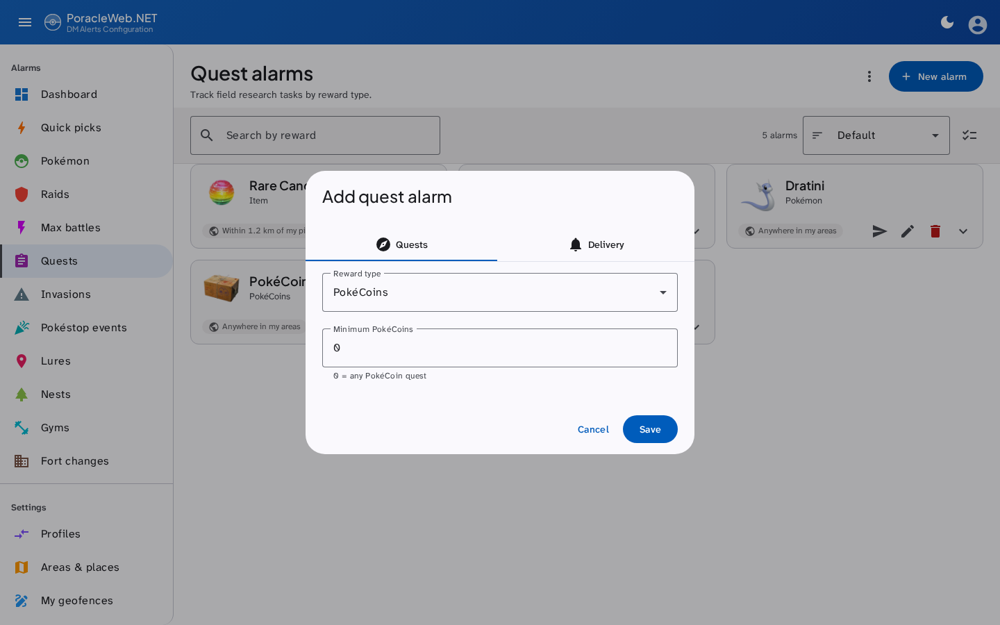
PokéCoins is always offered
PokéCoins is the last entry in the dropdown. PoracleNG 5.2.0 widened its list of accepted reward types, so every supported release takes it and nothing asks the server first.
Reads and deletes are never refused, so a PokéCoin rule set from the Discord bot stays visible and removable.
Gym alarm filters¶
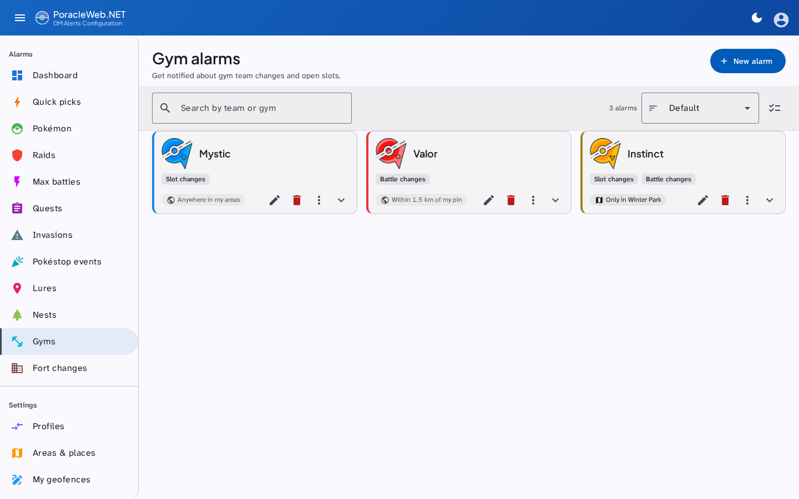
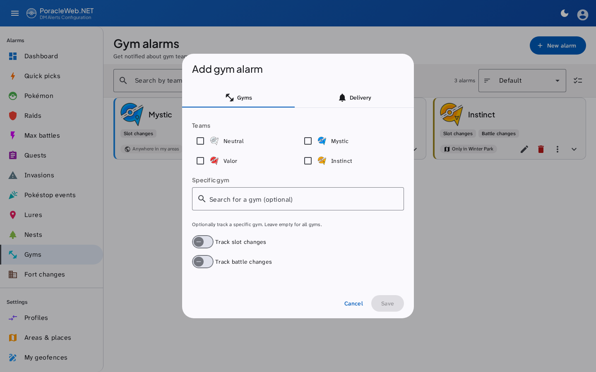
Gym alarms support:
| Field | Default | Description |
|---|---|---|
team |
4 (any team) |
Gym team to track |
slotChanges |
false |
Notify when a slot opens at the gym |
battleChanges |
false |
Notify on battle activity changes at the gym |
gymId |
null (all gyms) |
Track a specific gym by ID (set via gym picker) |
Lure alarm filters¶
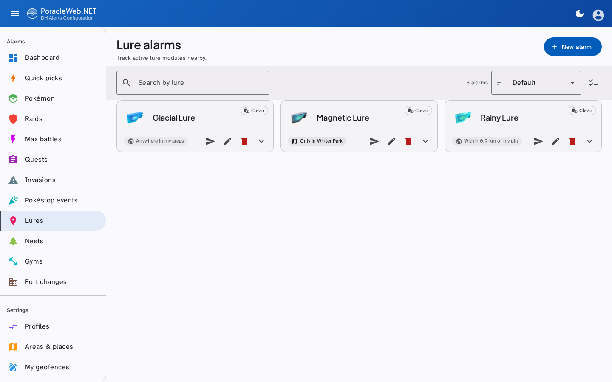
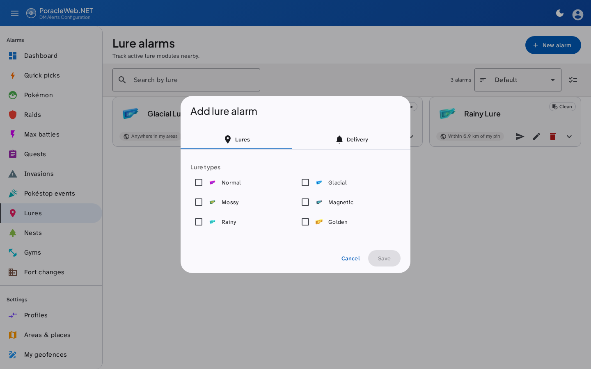
A lure alarm names one lure type (lure_id): Normal, Glacial, Mossy, Magnetic, Rainy or Golden. Ticking several in the add dialog creates one alarm per type. Lures support Edit message in place, so a lure that's renewed updates the alert you already have.
Nest alarm filters¶
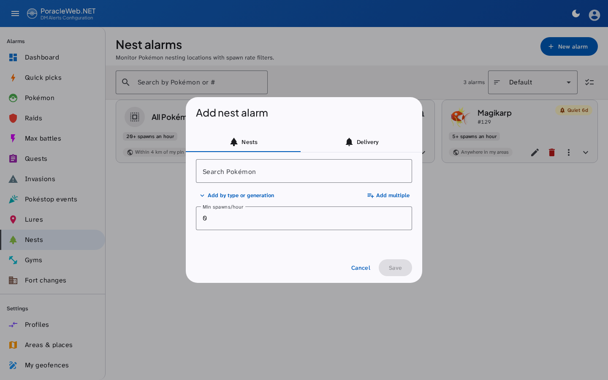
A nest alarm names the nesting species (and optionally its form) and a minimum spawns per hour (min_spawn_avg), so a nest too thin to be worth the trip stays quiet.
Fort change alarm filters¶
Fort change alarms track changes to pokestops and gyms as points of interest (not activity at them). This includes name changes, location changes, image updates, description changes, removals, and new POI additions.
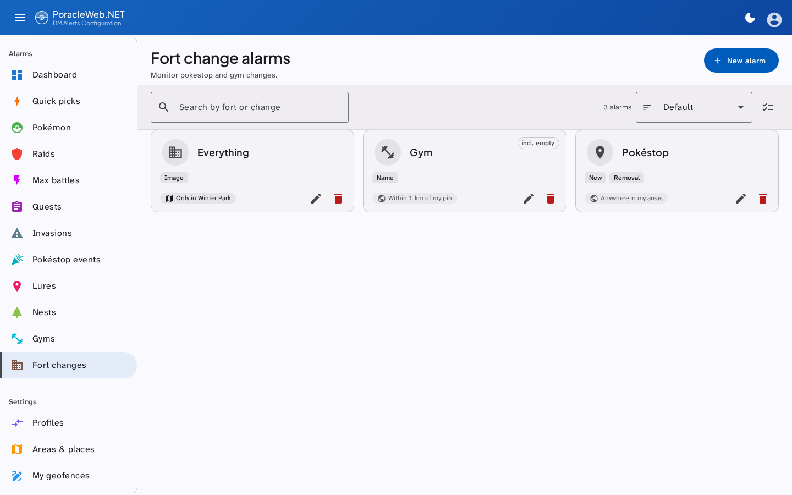
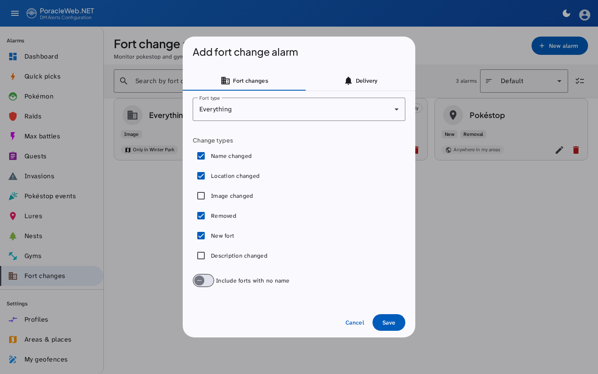
| Field | Default | Description |
|---|---|---|
fort_type |
"everything" |
Fort type to track: pokestop, gym, or everything |
include_empty |
0 (false) |
Include forts with no name |
change_types |
[] (all) |
JSON array of change types to monitor: name, location, image_url, description, removal, new |
Fort change alarms are proxied through PoracleNG using tracking type "fort". The API endpoints follow the standard alarm CRUD pattern at /api/fort-changes.
Max Battle alarm filters¶
Max Battle (Dynamax) alarms track battles at Power Spot stations. There are two tracking modes: By level tracks any Pokemon at the tiers you pick, one alarm per level, and By Pokemon tracks the Pokemon you pick at every level.
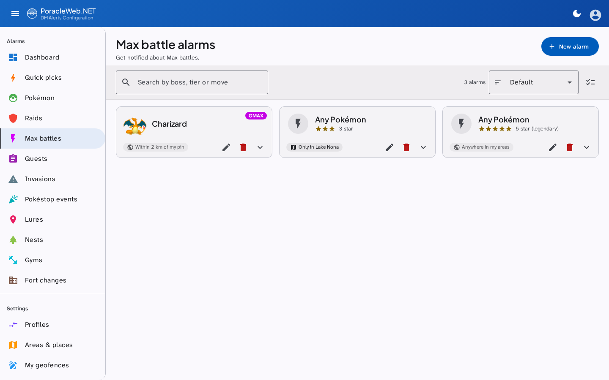
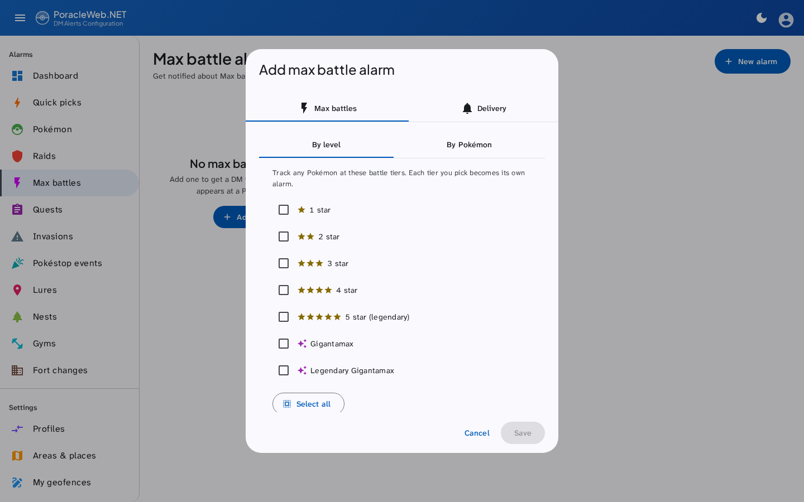
| Field | Default | Description |
|---|---|---|
pokemon_id |
9000 (any) |
Pokemon to track. 9000 = level-based tracking (any Pokemon). |
level |
9000 (any) |
Battle level. Only meaningful when pokemon_id = 9000. |
gmax |
0 (any) |
Gigantamax filter. 0 = matches all battles, 1 = Gigantamax only. |
form |
0 (any) |
Pokemon form filter. |
Battle levels¶
Max Battle levels follow the PoracleNG util.json definitions:
| Level | Label | Type |
|---|---|---|
| 1 | 1 Star Max Battle | Dynamax |
| 2 | 2 Star Max Battle | Dynamax |
| 3 | 3 Star Max Battle | Dynamax |
| 4 | 4 Star Max Battle | Dynamax |
| 5 | Legendary Max Battle | Dynamax |
| 7 | Gigantamax Battle | Gigantamax |
| 8 | Legendary Gigantamax Battle | Gigantamax |
No level 6
There is no level 6 in PoracleNG's max battle system. Levels 7 and 8 are Gigantamax battles where gmax is automatically derived (level > 6 = gmax).
Duplicates and edits¶
PoracleNG's older max battle handler had no duplicate check, so every Add created a row and an edit had
to delete and re-create the alarm. PoracleNG 5.4.0 diffs max battles like every other type. An Add of a
boss you already track that differs only by radius would merge into the existing alarm, so it's refused
with the takeover message. An edit is one uid-addressed replace, a bulk distance change is a PATCH
that keeps the uid, and an edit that would land on another max battle's settings is refused with a 409
before anything changes.
Scanner-based Pokemon filter¶
When the scanner database is configured, the "By Pokemon" tab queries the station table for distinct battle_pokemon_id values. This limits the Pokemon selector to species that have actually appeared in Max Battles. If the scanner DB is not configured, all Pokemon are shown.
GymCreate.Team default
GymCreate.Team must default to 4 (any team), matching Raid and Egg defaults. A C# int defaults to 0, which maps to "Neutral only" in Poracle, causing new gym alarms to silently filter out all non-Neutral gyms.
Gym picker¶
The gym picker is a shared component (app-gym-picker) that allows users to optionally target a specific gym when creating or editing Gym, Raid, or Egg alarms. When a gym is selected, alerts only fire for events at that particular gym.
How it works¶
- The picker displays a search field labeled "Search for a gym (optional)".
- As the user types (minimum 2 characters), the component debounces input (300ms) and queries the scanner database via
GET /api/scanner/gyms?search=<term>&limit=20. - Results appear in an autocomplete dropdown. Each option shows the gym's photo from the scanner DB (or a team icon when there's none), its name (or its ID when the name isn't set), and its area, found by checking which Koji geofence contains the gym (or its coordinates when none does).
- Selecting a gym sets the
gymIdon the alarm. A compact chip displays the selected gym's photo, name, and area with a clear button to remove the selection. - In edit mode, the picker loads the existing gym's details from
GET /api/scanner/gyms/{id}to display the name and photo.
Requirements¶
- The scanner database must be configured (
ConnectionStrings:ScannerDb). If not configured, theIScannerServiceis not registered and the search endpoints return empty results. - The Koji service is optional. When available, it enriches results with area names by checking gym coordinates against Koji geofence polygons.
Backend¶
ScannerControllerexposesGET /api/scanner/gyms(search) andGET /api/scanner/gyms/{id}(lookup by ID).IScannerService.SearchGymsAsync()queries the scanner DB's gym table by name (LIKE match), returningGymSearchResultwithId,Name,Url,Lat,Lon,TeamId, andArea.- Area enrichment runs server-side: for each gym result, the controller iterates Koji admin geofences and assigns the first matching fence name.
Invasion alarm filters¶
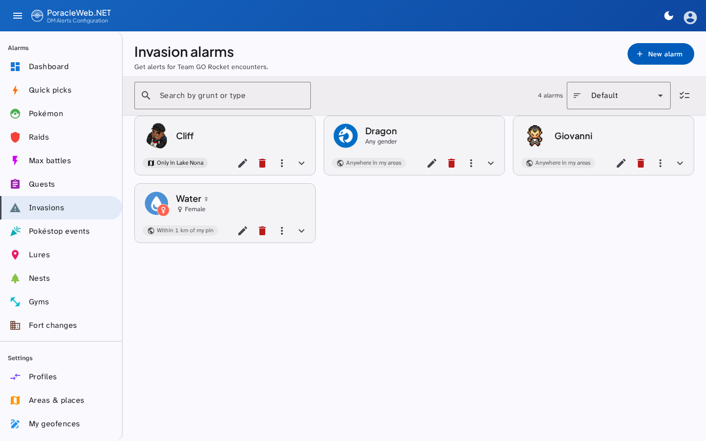
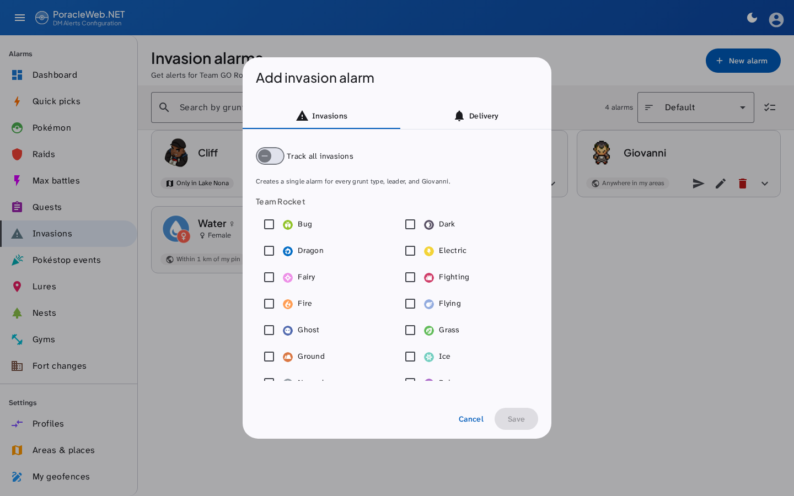
Invasion alarms filter by grunt type and gender. A few things happen to the grunt type on the way in:
metalis saved assteel. PoracleNG's game data calls the gruntsteel, and ametalrule never matched anything.- Kecleon, Gold Stop and Showcase are Pokéstop events, so picking one here saves a Pokéstop event rule instead.
- PoracleNG stores a spaced name such as
player team leaderasplayer_team_leader.
Two catch-all rules, every grunt and every boss encounter, lost a gender limit the next time they were saved on PoracleNG builds before 22 October 2026, whose v2 read didn't report a gender on them; jfberry/PoracleNG#331 fixed the read, so a current build keeps it. The web dialogs don't create that combination; it comes from the bot.
Pokéstop Event alarms¶
Showcases, Kecleon sightings and Gold Stops are the eleventh alarm type, on its own page at Pokéstop Events in the sidebar, directly after Invasions.
| Event | Stored as | What it is |
|---|---|---|
| Showcase | showcase |
A showcase running at a pokestop |
| Kecleon | kecleon |
A Kecleon hiding on a pokestop |
| Gold Stop | gold-stop |
A pokestop that has turned gold |
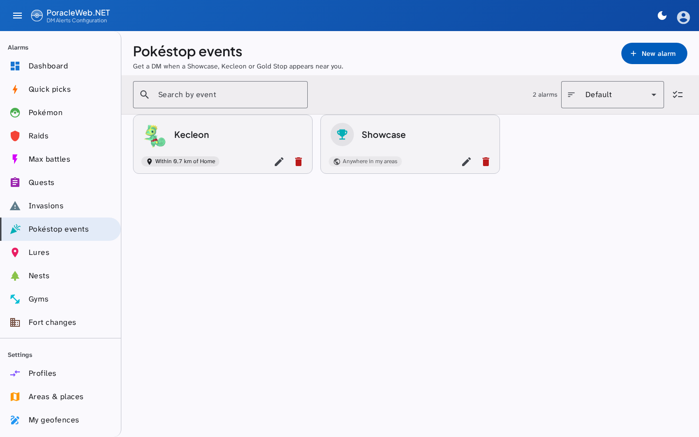
Creating one¶
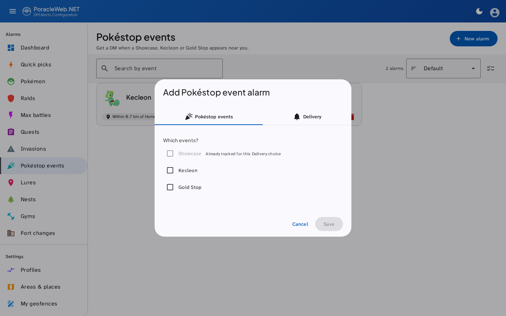
The add dialog has two tabs. The first, Pokéstop events, holds three checkboxes, one per event; an event you already track with the Delivery choice currently picked is unticked, disabled and labelled "Already tracked for this Delivery choice", so you can't create a duplicate. Change the Delivery choice and the same event can be ticked again, because a rule with another scope is a separate rule. Delivery is the usual scope picker, auto-delete toggle and template selector.
Ticking more than one event creates one rule per event, not one rule covering several. The edit dialog handles a single rule, so it offers one Event select rather than checkboxes.
Eleven types, ten tables¶
Pokéstop Event rules live in the same invasion table as invasion rules; the two are told apart by
the stored grunt_type. Everything else follows from that.
When you first see the Pokéstop Events page, your Invasions count drops by however many event rules you already had, and a Pokéstop Events count appears holding them. Nothing was created, deleted or moved — the same rows are being counted in two piles instead of one, and the overall total is unchanged.
The split is conditional. Where the page is switched off (Poracle reports disable_showcase = true,
or an admin turned the type off), event rows stay listed and deletable under Invasions, and the invasion add dialog keeps
offering the three events. The dashboard counts agree with whichever page the rows are on.
The Cleaning page's invasion toggle leaves event rows alone — it would otherwise set the
auto-delete bit on rules belonging to a page it never mentions. Where the Pokéstop Events page is
unavailable (Poracle reports disable_showcase = true) it sweeps them along with the invasion
rules, because then that switch is the only control you have over them.
What this type does not do¶
There's no test notification, because there's no mock payload builder for events, so no card has the More actions menu.
There's no separate section in the cross-profile overview either. Event rules appear there as invasion rows whose grunt is the event name. A profile export folds them into the invasion list the same way, an import saves them back as event rules, and a duplicate copies them with everything else.
On unless Poracle says otherwise
The page is there unless Poracle's configuration says general.disable_showcase = true. Absent or
unreadable leaves it on, because every supported PoracleNG serves the v2 incident route. Like every
other upstream flag this fails open: a Poracle outage must not switch off an alarm type that works.
Operators can also switch the type off here, independently of Poracle, with the disable_showcase
site setting under Admin → Server settings → Alarms.
Delivery & message modes¶
Every alarm carries a clean field that PoracleNG reads as a bitmask controlling how the notification is delivered. PoracleWeb.NET surfaces the bits the bot actually acts on as per-alarm toggles in the add/edit dialogs (and shows them as status badges on the alarm cards):
Mode (clean bit) |
Applies to | What it does |
|---|---|---|
| Auto-delete (bit 1) | all alarm types except Fort Changes | Deletes the Discord notification after the event expires (e.g. a Pokemon despawns or a raid ends). Toggle per-alarm in the dialog, or in bulk from the Cleaning page. PoracleNG has no clean column for fort changes, so the setting does not exist for that type. |
| Edit message in place (bit 2) | Lures; Pokemon; Raids/Eggs (via RSVP mode) | Updates the existing Discord message when the event changes instead of sending a new one. For lures and Pokemon, enable the "Edit message in place" toggle in the alarm dialog; for raids/eggs it is set automatically when you choose an RSVP mode (see the rsvpChanges rows above). On Pokemon the toggle appears only when PoracleNG's tracking.pokemon_edit config value is true (jfberry/PoracleNG#246); when it's off, absent or unreadable the control is hidden rather than offered as a no-op, and a bit set from the bot is kept. While shown, an edit only updates the message within a short window after it was sent (the PoracleNG operator configures how long) -- a later change to the same Pokemon arrives as a threaded reply instead. |
| Daily summary (bit 4) | Quests | Collects matching quests into a single summary message instead of one notification each. Enable the "Daily summary" toggle in the quest dialog. Requires a configured summary schedule on the bot. |
The modes combine (a quest can be both auto-delete and daily-summary, for example). PoracleWeb.NET preserves any bits set elsewhere: if you configured a delivery mode via the bot's !command interface that isn't surfaced in the web UI, editing the alarm in the browser will not wipe it.
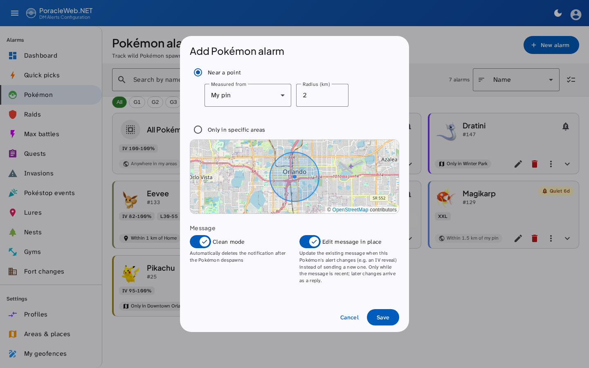
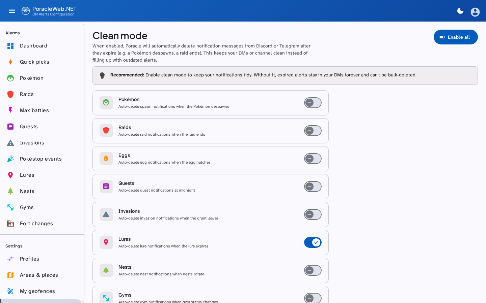
RSVP updates (raids & eggs)¶
Raid and egg alarms add a third delivery setting on top of auto-delete and edit-in-place: an RSVP notification mode, stored in the rsvpChanges field (see the rsvpChanges rows under the raid and egg filter tables above). Choose it from the three-option toggle group in the raid/egg add/edit dialog:
| Mode | What you get |
|---|---|
Matches only (0, the default) |
One notification when a raid or egg matches, and nothing further |
Matches + RSVP updates (1) |
The same match alert, plus a re-notification whenever the RSVP count changes |
RSVP updates only (2) |
No match alert; a notification only when RSVP counts change |
Picking mode 1 or 2 also turns on PoracleNG's edit-in-place behavior (clean bit 2), so RSVP count changes edit the existing Discord alert in place rather than sending a fresh message each time — your DMs stay to a single, updating notification per raid. When a non-default mode is set, the alarm card shows an "RSVP" (mode 1) or "RSVP only" (mode 2) status pill beside the auto-delete tag.
Scanner caveat: RSVP updates only arrive if the upstream scanner emits RSVP webhooks. In a deployment without one, mode
2("RSVP updates only") suppresses the initial match but never receives RSVP events — the alarm goes completely silent. Use mode2only if you know your scanner reports RSVPs.
Default values¶
All monster (Pokemon) alarm defaults:
| Field | Default | Description |
|---|---|---|
min_iv |
0 |
Minimum IV percentage |
max_iv |
100 |
Maximum IV percentage |
min_cp |
0 |
Minimum CP |
max_cp |
9000 |
Maximum CP |
min_level |
0 |
Minimum level |
max_level |
55 |
Maximum level |
min_weight |
0 |
Minimum weight |
max_weight |
9000000 |
Maximum weight |
atk |
0 |
Minimum attack IV |
def |
0 |
Minimum defense IV |
sta |
0 |
Minimum stamina IV |
max_atk |
15 |
Maximum attack IV |
max_def |
15 |
Maximum defense IV |
max_sta |
15 |
Maximum stamina IV |
pvp_ranking_best |
1 |
Best PVP ranking position. Ranks are 1-based; a stored legacy 0 reads as 1 |
pvp_ranking_worst |
4096 |
Worst PVP ranking position |
pvp_ranking_evolution |
0 |
PVP form to rank against (0 = base, 1 = mega, 2 = Mega X, 3 = Mega Y) |
min_time |
0 |
Minimum seconds of despawn time left (0 = no filter) |
gender |
0 |
Gender filter (0 = any) |
costume |
9000 |
Any costume |
size |
-1 |
Size filter (-1 = no filter / all sizes); a stored legacy 0 reads as -1 |
max_size |
5 |
Maximum size upper bound |
Raid-specific defaults:
| Field | Default |
|---|---|
team |
4 (any team) |
move |
9000 (any move) |
evolution |
9000 (any evolution) |
Egg-specific defaults:
| Field | Default |
|---|---|
team |
4 (any team) |
Gym-specific defaults:
| Field | Default |
|---|---|
team |
4 (any team) |
Max Battle-specific defaults:
| Field | Default |
|---|---|
pokemon_id |
9000 (any Pokemon / level-based) |
level |
9000 (any level) |
gmax |
0 (any — not Gigantamax-only) |
move |
9000 (any move) |
evolution |
9000 (any — unused placeholder) |
Test Notifications¶
Most alarm cards have a More actions menu (the three-dot button after Delete) with a Send test notification item. It sends a sample notification for that alarm, so you can check your filters and message formatting without waiting for a real event.
The item sits behind a menu on purpose. It used to be a paper plane beside Edit, and people pressed it by accident, then went looking for a spawn that was never there (#1097). The item says so itself: its second line reads "A sample from this alarm, not a live alert".
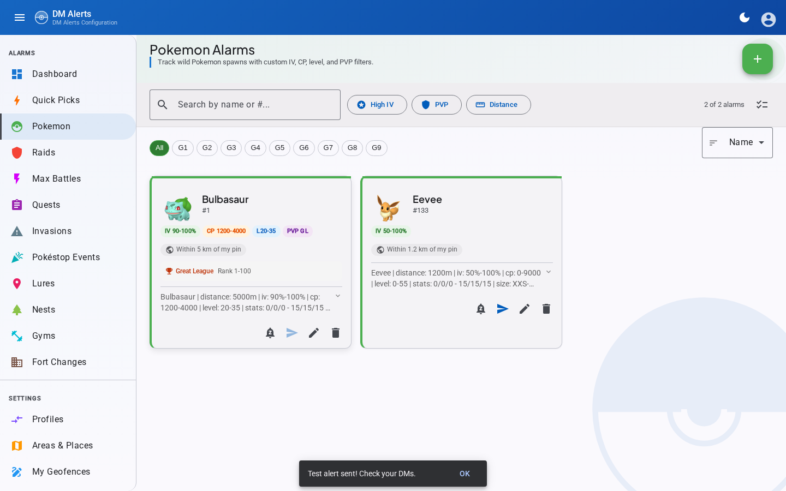
How it works¶
- Open More actions on the alarm card and choose Send test notification
- PoracleWeb.NET builds a mock webhook payload using the alarm's actual filter values (e.g., pokemon_id, raid_level, quest_reward) and the user's saved location as the event coordinates
- The payload is sent to PoracleNG's
POST /api/testendpoint, which formats it with the user's template and delivers it to their DMs, or to the destination when they're managing one - Once PoracleNG has accepted the test, PoracleWeb.NET sends one short plain-text note to the same destination through
POST /api/deliverMessages(see below) - A snackbar displays the result: success, error, or cooldown warning. While the request is out, the More actions button turns into a spinner
The note that follows a test¶
A test notification is built from your alarm's filters and your saved location, so it looks like a live one. The bot also sends this note to the same place (your DMs, or the channel, thread or webhook when you manage a destination):
Test notification from PoracleWeb.NET: the alert sent with this note is a sample built from your alarm's filters at your saved location. It isn't a live alert, so there's nothing to go and find.
The note is English only, because the backend doesn't localise any message text. It can arrive just before the sample as well as just after it: the sample goes through PoracleNG's render queue and the note doesn't, so the note never refers to the alert as "above" or "below". It is sent only after PoracleNG accepted the test, so a refused or unreachable test sends none. If the note itself fails, the test still counts as sent: the API logs a warning (the alarm type, the uid and the kind of destination, never the destination's address) and the member sees the usual success message. Because the note goes through PoracleNG's delivery queue, it counts toward PoracleNG's own per-destination delivery limits, so each test counts as two messages.
Supported alarm types¶
Test notifications are available for eight of the eleven alarm types:
- Pokemon
- Raid
- Egg
- Quest
- Invasion
- Lure
- Nest
- Gym
Not Fort Change, Max Battle or Pokéstop Event — TestAlertController rejects all three, and none of
those modules renders the More actions menu. They have no mock payload builder, so there is nothing to send.
Clearing a test notification¶
A test notification, and the note that follows it, are real DMs sent by the bot. This site never sees them and cannot take them back. The bot
can: send it poracle-clean as a direct message, prefixed with your server's command prefix, and it
deletes its own recent messages from that conversation. That includes real alerts, not only the tests.
The FAQ on the Help page carries the same answer with your own instance's prefix filled in.
Rate limiting¶
Test notifications are rate limited to prevent abuse:
The server allows 5 test notifications per 60 seconds per user (per IP address only for a request with no token). The browser adds a 15-second cooldown per alarm: the menu item is dimmed and its second line reads Cooldown active. It also drops a repeat click while a request for that alarm is still in flight.
Weather Display¶
The dashboard shows the current in-game weather conditions at the user's pin.
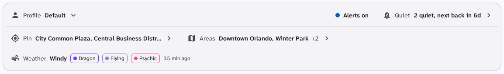
Features¶
It shows the in-game weather at the pin and in each of your selected areas, with the time the data was last refreshed, and refreshes in the background.
Pin required
The weather display requires a saved pin to function. Users who have not set one will not see weather information on the dashboard. Set a pin on the Areas & places page or through the onboarding wizard.
Quick Picks¶
Admins can define Quick Pick templates — pre-configured alarm sets that users can apply with one click. Useful for onboarding new users or sharing recommended configurations.
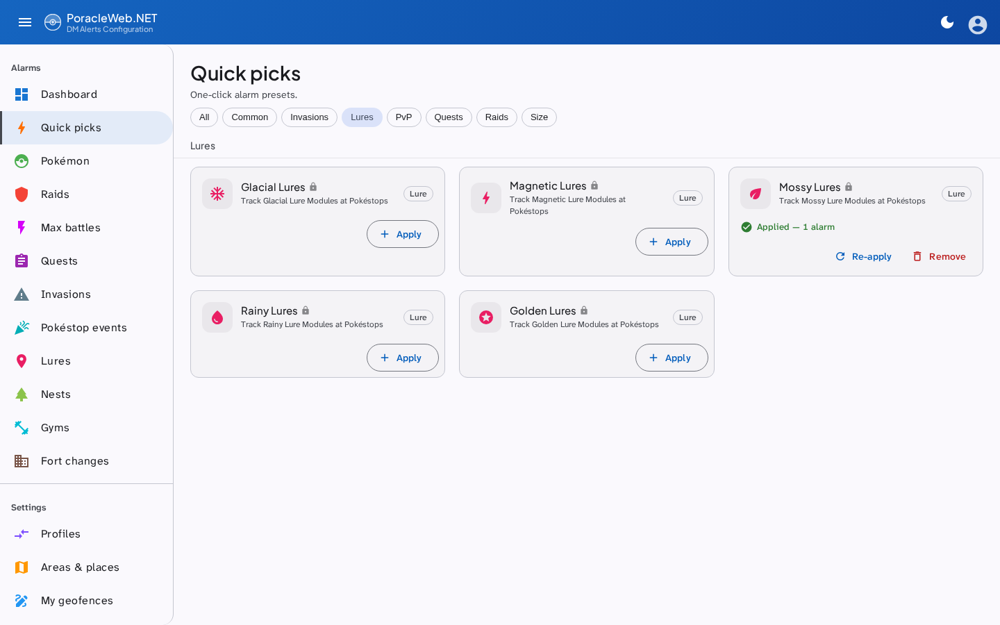
When applying a Quick Pick, the apply dialog's Delivery tab holds the same scope picker the add dialogs use, seeded from your Alert Defaults. Whatever you choose there (areas, a saved place, a radius, or a specific set of areas) applies to every alarm the pick creates.
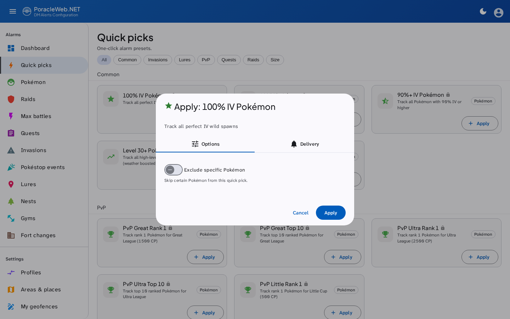
Applying a pick creates only the alarms that are new. One that already exists, or would replace another alarm of yours, is skipped, and the confirmation counts only the alarms it created.
Related¶
- Quiet Periods — silence one gym, area, species or station for a while without touching the alarms themselves
- Quest Summary Delivery — collecting matching quests into one digest
- Profiles — keeping separate alarm sets and switching between them
- PoracleNG Version Compatibility — which features need which server